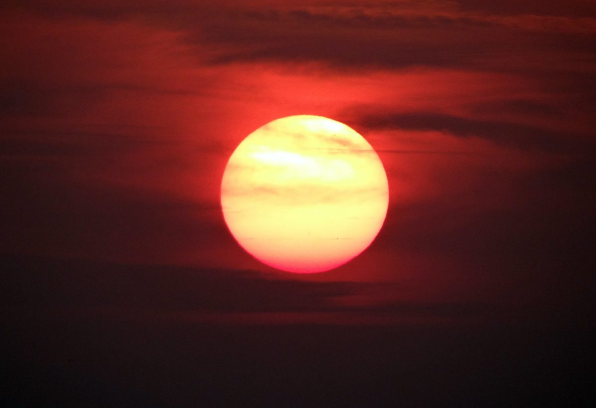

|  |
Definición:El Sol es la única estrella de nuestro sistema solar. Su influencia y gravedad mantiene unido todo lo que gira alrededor de él, y su luz, calor y energía son el motor que propicia la vida en la Tierra. En este artículo te contamos todo lo que deberías conocer sobre el Sol. Formación:El Sol se formó hace 4.650 millones de años aproximadamente a partir grandes nubes moleculares de gas y polvo dejadas por generaciones anteriores de estrellas. Dentro de dicha nube, los materiales comenzaron a agregarse por gravedad, formando lo que los científicos conocen como una protoestrella, que continuó atrayendo a su vez a más materiales y generando una gravedad mayor en una especie de circulo virtuoso. Una vez alcanzada una masa crítica de material, se produjo en el interior del Sol el "chispazo" que encendió la estrella, es decir, el comienzo de las reacciones nucleares en cadena que proporcionan su energía a la estrella. Con un espesor de 400 kilómetros y una temperatura media de 5.500 ºC, aunque es considerada la superficie del Sol, la fotosfera es en realidad la primera capa de la atmósfera solar. De dentro hacia afuera, la fotosfera se encuentra inmediatamente seguida por la cromosfera, una capa de unos 10.000 kilómetros de espesor y por la llamada zona de transición, una capa delgada de la atmósfera solar donde la cromosfera se calienta súbitamente para convertirse en la corona solar, la capa más exterior de nuestra estrella. Dato curiosoEn ocasiones, en la fotografías de las superficie del Sol se pueden observar unas regiones más negras llamadas manchas solares. Las machas solares pueden llegar a medir el diámetro de la Tierra es decir, hasta unos 12.000 kilómetros, y corresponden con zonas que se encuentran a una temperatura inferior a la de sus alrededores y presentan una intensa actividad magnética. Una mancha solar típica consiste en una región central oscura, llamada "umbra", rodeada por una "penumbra" más clara. |